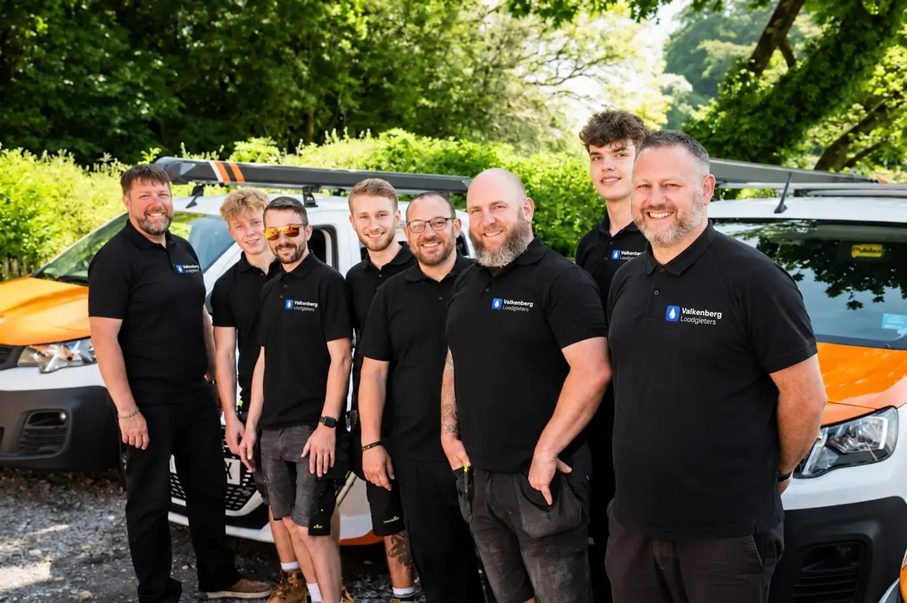

Vakwerkachter elkekraan.
Lekkage, verstopping of storing? Onze eigen loodgieters komen dag en nacht. U hoort vooraf wat het kost.
- 24/7Dag en nacht bereikbaar, ook in het weekend
- VoorafU hoort de prijs voordat we beginnen
- EigenLoodgieters in vaste dienst, geen tussenpersonen
- GarantieOp het werk dat we uitvoeren
Wat we oplossen
Van een druppende kraan tot een verstopt riool. Kies uw probleem voor uitleg, tarieven en wat u zelf alvast kunt doen.

Eerst zoeken waar het zit. Dan pas openmaken.
Water loopt langs leidingen en balken en komt vaak ergens anders naar buiten. Daarom meten we eerst, en breken we alleen waar het nodig is.
Zo werken we
Bij elke klus hetzelfde, of het nu drie uur 's nachts is of dinsdagmiddag.
U belt
U krijgt direct een loodgieter aan de lijn, geen callcenter.
U hoort de prijs
We bekijken het probleem en noemen de prijs voordat we beginnen.
Opgelost
We testen of alles werkt en laten de ruimte netjes achter.
Tarieven
Duidelijke prijzen. Bij grotere klussen krijgt u vooraf een vaste prijs.
- Voorrijkosten
- € ..
- Uurtarief
- € ..
- Toeslag avond, nacht en weekend
- € ..
Voorbeeld. De echte tarieven vullen we in met Ravenberg.
Werkgebied
Kies uw plaats voor het lokale nummer en informatie over uw regio.
Vragen
Hoe snel kan er iemand komen?
Bij spoed proberen we zo snel mogelijk langs te komen. Hoe snel precies hangt af van waar u woont en hoe druk het is. Dat hoort u meteen aan de telefoon.
Wat doe ik bij een lekkage?
Draai de hoofdkraan dicht, meestal bij de watermeter. Komt er water bij stopcontacten of lampen, zet dan die groep in de meterkast uit. Bel ons daarna.
Weet ik vooraf wat het kost?
Ja. De loodgieter noemt de prijs voordat hij begint. Bij grotere klussen krijgt u een vaste prijs.
Betaalt mijn verzekering?
Dat hangt af van uw polis. U krijgt een werkbon met foto's, zodat u de schade makkelijk kunt melden.
Water waar het niet hoort?
Bel ons, dag en nacht. Of vraag een offerte aan voor gepland werk.